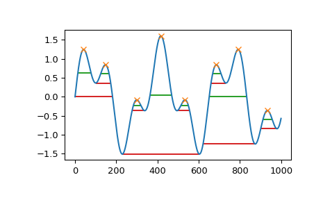

scipy.signal.peak_widths¶
-
scipy.signal.peak_widths(x, peaks, rel_height=0.5, prominence_data=None, wlen=None)[source]¶ Calculate the width of each peak in a signal.
This function calculates the width of a peak in samples at a relative distance to the peak’s height and prominence.
- Parameters
- xsequence
A signal with peaks.
- peakssequence
Indices of peaks in x.
- rel_heightfloat, optional
Chooses the relative height at which the peak width is measured as a percentage of its prominence. 1.0 calculates the width of the peak at its lowest contour line while 0.5 evaluates at half the prominence height. Must be at least 0. See notes for further explanation.
- prominence_datatuple, optional
A tuple of three arrays matching the output of
peak_prominenceswhen called with the same arguments x and peaks. This data are calculated internally if not provided.- wlenint, optional
A window length in samples passed to
peak_prominencesas an optional argument for internal calculation of prominence_data. This argument is ignored if prominence_data is given.
- Returns
- widthsndarray
The widths for each peak in samples.
- width_heightsndarray
The height of the contour lines at which the widths where evaluated.
- left_ips, right_ipsndarray
Interpolated positions of left and right intersection points of a horizontal line at the respective evaluation height.
- Raises
- ValueError
If prominence_data is supplied but doesn’t satisfy the condition
0 <= left_base <= peak <= right_base < x.shape[0]for each peak, has the wrong dtype, is not C-contiguous or does not have the same shape.
- Warns
- PeakPropertyWarning
Raised if any calculated width is 0. This may stem from the supplied prominence_data or if rel_height is set to 0.
Warning
This function may return unexpected results for data containing NaNs. To avoid this, NaNs should either be removed or replaced.
See also
find_peaksFind peaks inside a signal based on peak properties.
peak_prominencesCalculate the prominence of peaks.
Notes
The basic algorithm to calculate a peak’s width is as follows:
Calculate the evaluation height \(h_{eval}\) with the formula \(h_{eval} = h_{Peak} - P \cdot R\), where \(h_{Peak}\) is the height of the peak itself, \(P\) is the peak’s prominence and \(R\) a positive ratio specified with the argument rel_height.
Draw a horizontal line at the evaluation height to both sides, starting at the peak’s current vertical position until the lines either intersect a slope, the signal border or cross the vertical position of the peak’s base (see
peak_prominencesfor an definition). For the first case, intersection with the signal, the true intersection point is estimated with linear interpolation.Calculate the width as the horizontal distance between the chosen endpoints on both sides. As a consequence of this the maximal possible width for each peak is the horizontal distance between its bases.
As shown above to calculate a peak’s width its prominence and bases must be known. You can supply these yourself with the argument prominence_data. Otherwise, they are internally calculated (see
peak_prominences).New in version 1.1.0.
Examples
>>> from scipy.signal import chirp, find_peaks, peak_widths >>> import matplotlib.pyplot as plt
Create a test signal with two overlayed harmonics
>>> x = np.linspace(0, 6 * np.pi, 1000) >>> x = np.sin(x) + 0.6 * np.sin(2.6 * x)
Find all peaks and calculate their widths at the relative height of 0.5 (contour line at half the prominence height) and 1 (at the lowest contour line at full prominence height).
>>> peaks, _ = find_peaks(x) >>> results_half = peak_widths(x, peaks, rel_height=0.5) >>> results_half[0] # widths array([ 64.25172825, 41.29465463, 35.46943289, 104.71586081, 35.46729324, 41.30429622, 181.93835853, 45.37078546]) >>> results_full = peak_widths(x, peaks, rel_height=1) >>> results_full[0] # widths array([181.9396084 , 72.99284945, 61.28657872, 373.84622694, 61.78404617, 72.48822812, 253.09161876, 79.36860878])
Plot signal, peaks and contour lines at which the widths where calculated
>>> plt.plot(x) >>> plt.plot(peaks, x[peaks], "x") >>> plt.hlines(*results_half[1:], color="C2") >>> plt.hlines(*results_full[1:], color="C3") >>> plt.show()
